.JPG){kind=link}
Hollywood Travel Guide
Neighborhood in the central region of Los Angeles. Its name has come to be a shorthand reference for the U.S. film industry and the people associated with it
Places to See in Hollywood
Dolby Theatre
Prestigious venue known for hosting the Academy Awards and major live performances in a state-of-the-art setting.
Griffith Observatory
Observatory is a popular tourist attraction with a close view of the Hollywood Sign and an extensive array of space and science-related displays
Griffith Park
Park features a number of popular attractions such as the Los Angeles Zoo, the Autry Museum of the American West, the Griffith Observatory, and the Hollywood Sign. Due to its presence in many films, the park is among the most famous municipal parks in North America
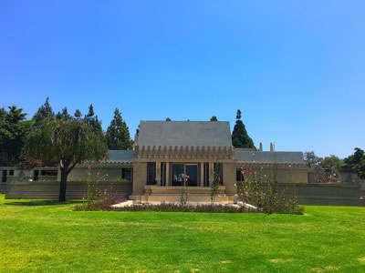
Codera23, CC BY-SA 4.0, via Wikimedia Commons; Image Size Adjusted

Hollyhock House
Architecturally significant residence featuring Mayan Revival design elements, custom furnishings, and integrated indoor-outdoor living spaces designed by a pioneering modernist.
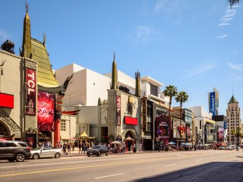
© Pierre André, CC BY-SA 4.0, via Wikimedia Commons; Image Size Adjusted
Hollywood Boulevard
Major east-west street and popular tourist destination where the Hollywood Walk of Fame is primarily located
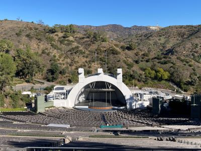
© Pierre André, CC BY-SA 4.0, via Wikimedia Commons; Image Size Adjusted
Hollywood Bowl
Iconic open-air amphitheater renowned for its natural acoustics, diverse performances, and scenic hillside setting.
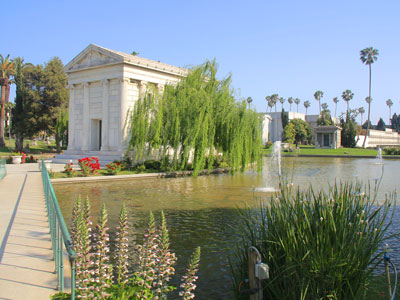
MikeJiroch, CC BY-SA 3.0, via Wikimedia Commons; Image Size Adjusted

Hollywood Forever Cemetery
Historic cemetery and cultural landmark featuring elaborate mausoleums, celebrity gravesites, and public events set amid landscaped gardens and architectural monuments.
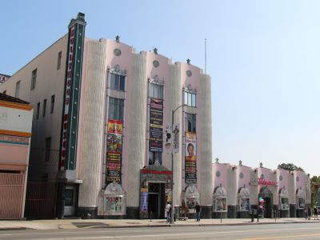
MikeJiroch, CC BY-SA 3.0, via Wikimedia Commons; Image Size Adjusted
Hollywood Museum
Museum showcasing iconic film and television memorabilia, costumes, and props across four floors in a historic art deco building.
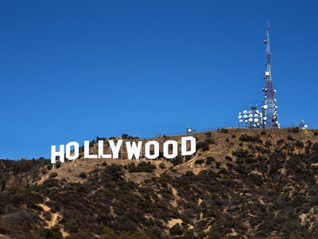
Thomas Wolf, www.foto-tw.de, CC BY-SA 3.0, via Wikimedia Commons; Image Size Adjusted

Hollywood Sign
An American landmark and cultural icon overlooking Hollywood, situated on Mount Lee, in the Hollywood Hills area of the Santa Monica Mountains
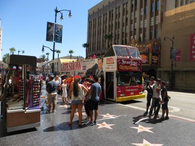
Luijtenphotos, CC0, via Wikimedia Commons; Image Size Adjusted

Hollywood Walk of Fame
Comprises more than 2,690 five-pointed terrazzo and brass stars embedded in the sidewalk that function as permanent public monuments to achievements of musicians, actors, directors, producers, musical and theatrical groups, fictional characters, and others
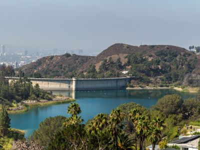
MikeJiroch, CC BY-SA 3.0, via Wikimedia Commons; Image Size Adjusted
Lake Hollywood Park
Grassy hillside park offering panoramic views of the Hollywood Sign, walking paths, and a relaxed setting for picnics and dog-friendly outings.
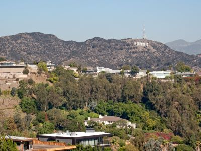
Grinnell Point and Swiftcurrent Lake from the Many Glacier Hotel
Jeff P from Berkeley, CA, USA, CC BY 2.0, via Wikimedia Commons; Image Size Adjusted
.jpg){kind=link}
Mount Lee
Mountain peak featuring a prominent hillside landmark and communication tower, accessible via hiking trails through a large urban park.
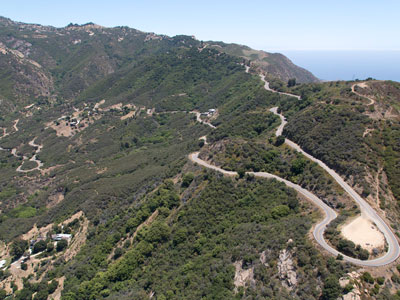
Carol M. Highsmith, Public domain, via Wikimedia Commons; Image Size Adjusted
Mulholland Drive
Iconic Hollywood 21-mile (34 km) long mostly two-lane, minor arterial road that loosely follows the ridgeline of the eastern Santa Monica Mountains and the Hollywood Hills and is featured in a significant number of movies, songs, and novels
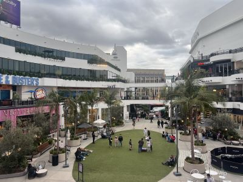
Carol M. Highsmith, Public domain, via Wikimedia Commons; Image Size Adjusted
Ovation Hollywood
Multi-level entertainment and retail complex featuring shops, restaurants, theaters, and event spaces designed for immersive visitor experiences.
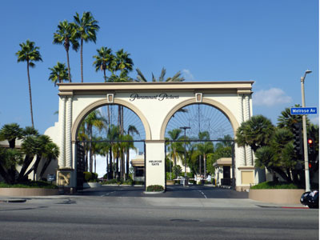
Coolcaesar, CC BY-SA 4.0, via Wikimedia Commons; Image Size Adjusted

Paramount Pictures Studio Tour
Studio offering regular tours featuring stages where Samson and Delilah, Sunset Blvd., White Christmas, Rear Window, Sabrina, Breakfast at Tiffany's, and many other classic films were shot are still in use today
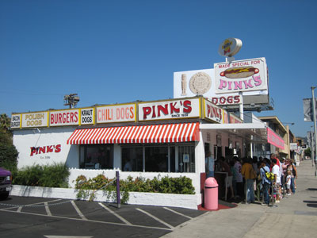
Minnaert, CC BY-SA 3.0, via Wikimedia Commons; Image Size Adjusted

Pink's Hot Dogs
Landmark hot dog restaurant in the Fairfax District with several newer menu items named after Hollywood celebrities, some of whom can be seen at the restaurant
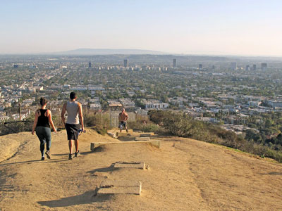
Downtowngal, CC BY-SA 4.0, via Wikimedia Commons; Image Size Adjusted

Runyon Canyon Park
160-acre (65 ha) park in Los Angeles, California, at the eastern end of the Santa Monica Mountains. The Runyon Canyon Road, a fire road that is closed to public motor vehicle access, runs roughly through the center of the park with numerous smaller hiking trails throughout
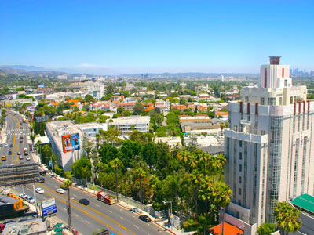
MikeJiroch, CC BY-SA 3.0, via Wikimedia Commonss; Image Size Adjusted

Sunset Boulevard
Major thoroughfare in the cities of Beverly Hills and West Hollywood (including a portion known as the Sunset Strip).
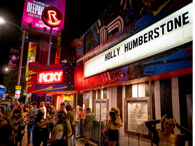
Justin Higuchi, CC BY 2.0, via Wikimedia Commons; Image Size Adjusted
.jpg){kind=link}
Sunset Strip
1.5-mile stretch of Sunset Boulevard that passes through the city of West Hollywood, known for its boutiques, restaurants, rock clubs, and nightclubs, as well as its array of huge, colorful billboards
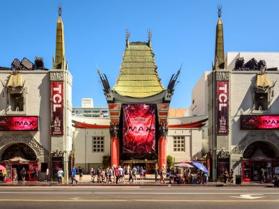
Richard Vokolek, CC BY-SA 4.0, via Wikimedia Commons; Image Size Adjusted

TCL Chinese Theatre
Movie palace on the historic Hollywood Walk of Fame
Overview
Hollywood is the Los Angeles neighborhood that gave its name to the American film industry, and one of the world’s best-known tourist destinations, with glitz, nightlife and movie history on every corner. Visitors come to walk the Hollywood Walk of Fame, see the handprints at the TCL Chinese Theatre, take in a show at the Dolby Theatre, catch a concert at the Hollywood Bowl, and see the Hollywood Sign from Griffith Park. Studios including Paramount still operate here, and Universal Studios is nearby.
Hollywood was named by Daeida Wilcox, who chose the name “because it sounds nice” and holly brings good luck. The community merged with Los Angeles in 1910 to secure water, and filmmakers, including D.W. Griffith, moved west to escape Thomas Edison’s patent enforcement, drawn by sunshine and varied scenery. The first studio opened in 1911, and by the 1920s Hollywood was the nation’s fifth-largest industry, earning the nicknames “Tinseltown” and the “dream factory.”
Popular stops include Hollywood Boulevard, the Capitol Records Building, the Pantages Theatre, Hollywood Forever Cemetery, the Hollywood Museum and the Sunset Strip nearby.
This article uses material from the Wikipedia article "Hollywood", which is released under the Creative Commons Attribution-Share-Alike License 3.0